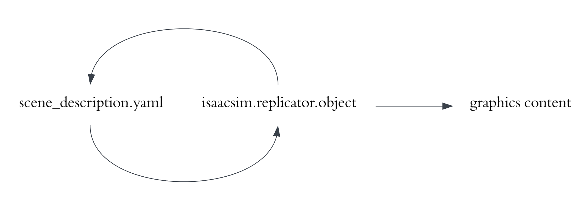
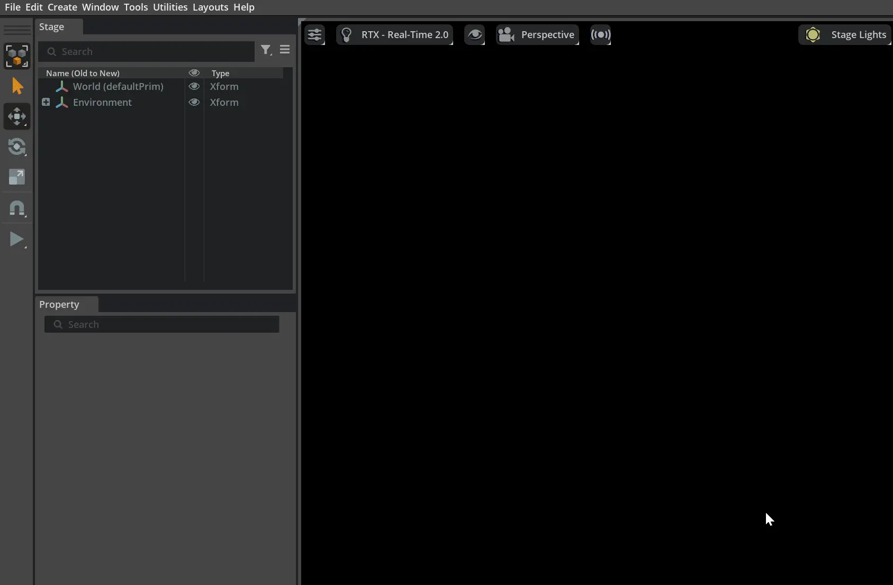
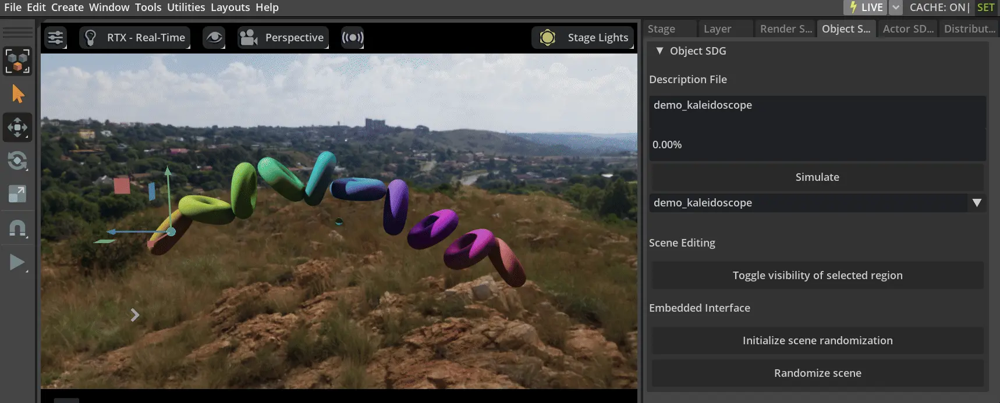
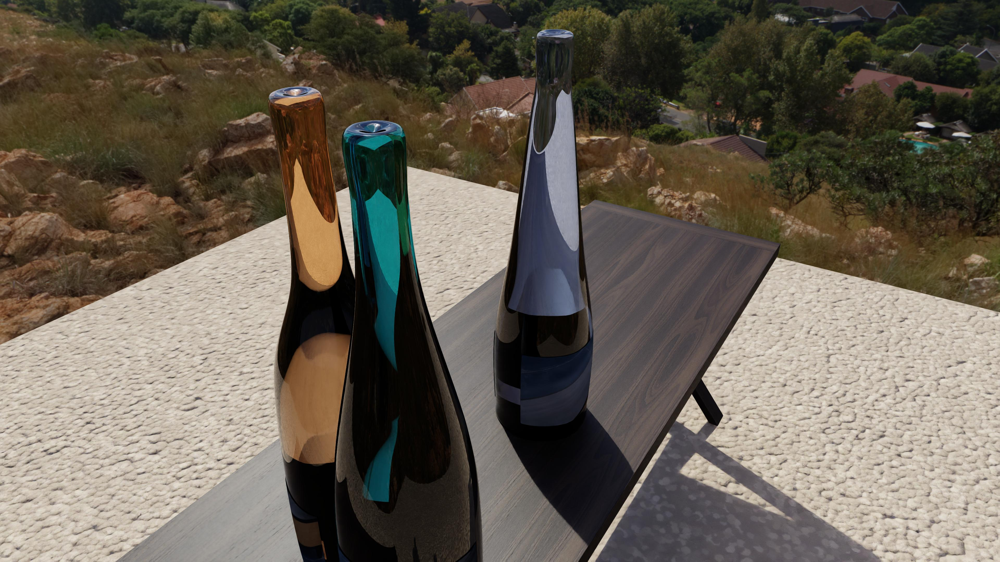
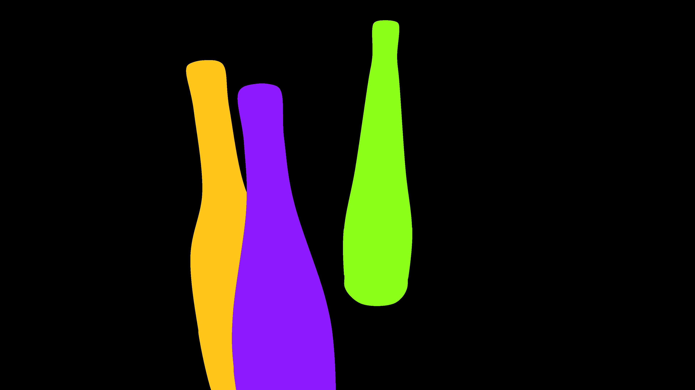
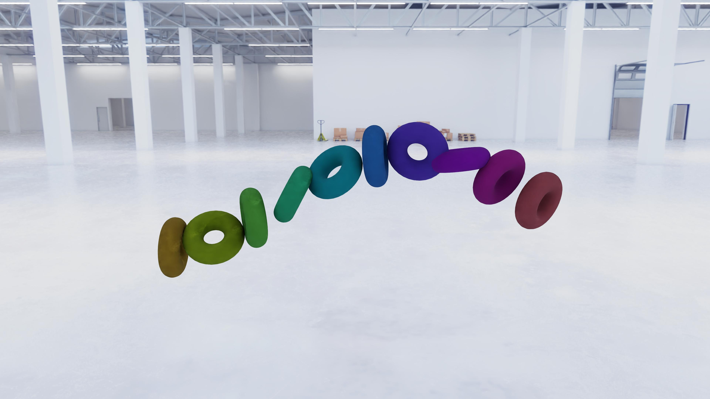
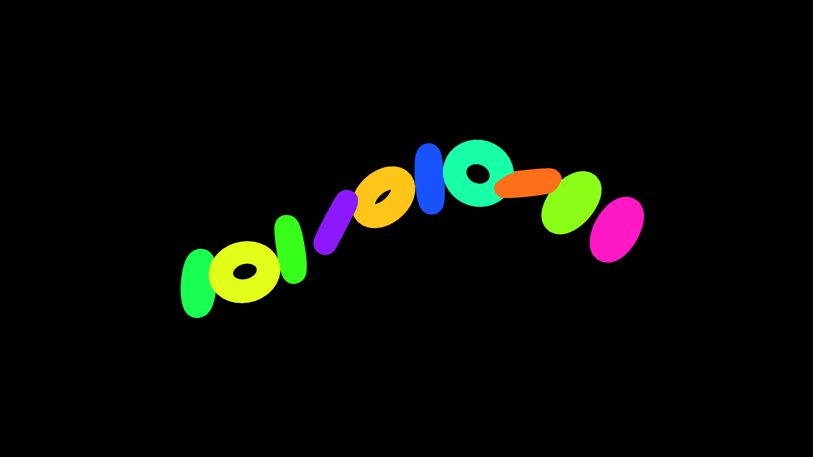
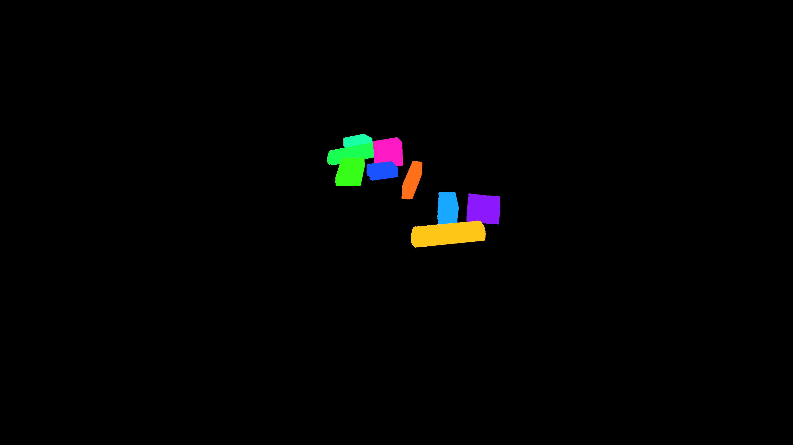

Object Simulation and Synthetic Data Generation#
isaacsim.replicator.object (IRO) is a no-code-change-required tool that generates synthetic data for model training that can be used on a range of tasks from retail object detection to robotics. The extension can be run from the UI or the isaac-sim container.
It takes a YAML description file that describes a mutable scene, or a hierarchy of such stacked description files as input, and outputs a description file along with graphics content including RGB, 2D/3D bounding boxes, and segmentation masks.

Motivation#
Training deep learning models with synthetic data is in high demand, while 3D software that is used to generate synthetic data often take a long time to learn, including stages such as getting familiar with UI panels. IRO aims at providing you an easy way to compose scenes that are uniquely domain randomized. For example, a typical user for this product is a data scientist without experience in using 3D modeling software, such as Maya and 3ds Max.
In a domain randomization scenario, rather than the actual detailed content in the 3D scene, a data scientist often focuses more on the rules that governs how the scene is randomized, and the relationship among these randomized rules. IRO provides a set of tools, using macros, to abstractly, intuitively, and compactly describe a randomized 3D scene.
Chat IRO: Natural Language Interface for IRO#
Chat IRO is a new extension that lets you describe scenes in plain English and automatically generates IRO description files (YAML). It applies the configuration to the stage, shows an immediate viewport preview, can run simulations, and supports saving and loading YAML files enabling fast, iterative scene authoring without manual YAML editing.
End-to-end Pipeline#
An end-to-end pipeline is made up of groupings of the larger steps that go into using IRO.
Acquire Graphics Resources
To compose a randomized scene, IRO requires imported 3D models to be in USD format. Common 3D formats such as Wavefront OBJ can be converted to USD using asset converter.
Compose a Description File
The specifications of a description file is described in this multi-page documentation. It’s recommended that you start with the video guides in best practices.
Generate Synthetic Data
Follow the guidelines below to run IRO.
Train a CV Model; Deployment and Real-World Application
An example notebook showing steps to train an object detection model on the synthetic images created using IRO is in TAO 6.0.
Run from the UI#
Follow the Omniverse Extension Manager guide to enable the
isaacsim.replicator.object.coreandisaacsim.replicator.object.uiextensions.If the extension is successfully enabled, Object SDG panel will be available at the top right, and Tools > Action and Event Data Generation will have options Object SDG and Distribution Visualizer.
If not, disable and enable the extension again. The Object SDG panel is turned on by default, and you can turn it off or on again by Tools > Action and Event Data Generation > Object SDG.

Click on the folder icon or the Visual Studio Code icon on the right side of the opened extension panel as shown above. The root folder of the extension opens.
Under
PATH_TO_CORE_EXTENSION/isaacsim/replicator/object/core/configsthere are many description files in YAML format. It’s recommended that you start withdemo_kaleidoscope.yaml. For empty space detection, usedemo_empty_space.yamland refer to the linked catalog page.Go to
global.yamland updateoutput_pathto any local folder where you can store the simulation output.
Note
Select description files from the dropdown below the Simulate button. When the extension is loaded, all .yaml files in the configs folder will have their names included in this list.
Placeholders in description files
Some example description files have placeholders. The paths need to be replaced with valid paths.
For example:
In
global.yamlandminimum.yaml, replacePATH_TO_OUTPUTwith a valid path.In
demo_bottle.yaml, replacePATH_TO_LABEL_IMAGESwith a folder that contains JPEG images.For
tutorial_harmonizer_permutate.yaml,demo_macro.yaml,tutorial_macro.yaml,tutorial_scene_graph.yamlandtutorial_scene_graph_randomized.yamlto run:replace
PATH_TO_OROinglobal.yamlwith the absolute path ofdata/oro_tutorial_models/oro.usdin the extension’s root folder.
In
doc_observatory.yaml:replace
PATH_TO_OBSERVATORY_SCOPEwith the absolute path ofdata/oro_tutorial_models/observatory_scope.usdreplace
PATH_TO_OBSERVATORY_BASEwith the absolute path ofdata/oro_tutorial_models/observatory_base.usdreplace
PATH_TO_OBSERVATORY_SHAFTwith the absolute path ofdata/oro_tutorial_models/observatory_shaft.usd.
To make
demo_bin_pack.yaml,demo_bins_of_bins_rack_2_layers.yaml,demo_bins_of_bins_rack.yaml,demo_bins_of_bins.yaml,demo_table.yamlanddemo_transform_operator.yamlwork:replace
PATH_TO_BOXESwith a folder containing USD files of boxes (or other USDs) inglobal.yaml.
- In
demo_shader_attributes.yaml, replace
PATH_TO_USDwith a path to a USD file.
- In
In
demo_frustum.yaml:replace
PATH_TO_MAIN_OBJECTSwith a folder containing USD files to be used as main objects.replace
PATH_TO_DISTRACTORSwith a folder containing USD files to be used as distractors.replace
PATH_TO_BACKGROUND_IMAGESwith a folder containing JPEG images to be used as background images.
You can adjust the scale, if things are not showing up correctly, because different USD files have different sizes.
Select
demo_kaleidoscopefrom the dropdown box;demo_kaleidoscopewill appear in the Description File text box. You can also use the full absolute pathPATH_TO_CORE_EXTENSION/isaacsim/replicator/object/core/configs/demo_kaleidoscope.yamlto load a description file.Click Simulate to start the simulation. The progress bar will show the simulation progress.
In the above and following content, PATH_TO_CORE_EXTENSION varies, for Isaac on Windows it is something like C:\isaacsim\extscache\isaacsim.replicator.object.core-0.x.y\isaacsim\replicator\object\core\configs\demo_kaleidoscope.yaml, while for Isaac on Linux it is something like ~/isaacsim/extscache/isaacsim.replicator.object.core-0.x.y/isaacsim/replicator/object/core/configs/demo_kaleidoscope.yaml
A guide on how to use the extension is available here.
Run from Docker#
To install the Isaac Sim Docker container, visit Container Deployment.
To run the Isaac Sim Docker container:
docker run --gpus device=0 --entrypoint /bin/bash -v LOCAL_PATH:/tmp --network host -it ISAAC_SIM_DOCKER_CONTAINER_URL
Accordingly, update global.yaml to have output_path to be any folder under /tmp.
For example, to launch the simulation with demo_kaleidoscope:
bash isaac-sim.sh --no-window --enable isaacsim.replicator.object.core --allow-root --/log/file=/tmp/isaacsim.replicator.object.log --/log/level=warn --/windowless=True --/config/file=PATH_TO_CORE_EXTENSION/isaacsim/replicator/object/core/configs/demo_kaleidoscope.yaml
/tmp/isaacsim.replicator.object.log contains the messages from execution as well as from the extension. You can search the messages from the extension by filtering the file with METROPERF.
Note
If it is not generating anything on the first run inside Docker container, run it again.
Embedded Interface#
When writing graphics content to disk is not needed, the embedded interface is a quick way to prototype a description file.
To use the embedded interface, select a description file, and then click on the Initialize Scene Randomization button in the Object Detection SDG panel to load the description file. Randomization symbols will be created and connected accordingly. From then on, the scene is randomized per click on the Randomize Scene button.
Note
After clicking on the Initialize Scene Randomization button and before clicking on the Randomize Scene button, it is normal that the viewport is black. To see anything of interest at this stage, press “F” to focus on the selected prim.

To preview physically, click on the triangular Play button on the left column of widgets.
Expected Output#
After the simulation, the output is stored in output_path. The output content is determined by the output switches setting.
For example, the image output of demo_bottle is:
{kind=link}

While the segmentation output is:
{kind=link}

The 2D bounding box is:
bottle_0 0 -1.0 0 1028 333 1362 2159 0 0 0 0 0 0 0
bottle_1 0 -1.0 0 1895 112 2277 1694 0 0 0 0 0 0 0
bottle_2 0 -1.0 0 1281 462 1854 2159 0 0 0 0 0 0 0
in which the four positive numbers indicate x_min, x_max, y_min, y_max. The number -1 is where the occlusion rate should be, but because a bottle is transparent, it is -1 here.
As another example, the image output of demo_kaleidoscope is:
{kind=link}

While the segmentation output is:
{kind=link}

Concepts#
Description File
The description file is a YAML file that has a main key named isaacsim.replicator.object.
The description file consists of key-value pairs. Each key-value pair is a Mutable, a Harmonizer, or a Setting.
The description file generates frames as specified. Each frame the scene is randomized, graphics content is captured, and output to disk. Settings describe how the scene is configured and how data is output. For example, you can set the number of frames to output, whether or not to output 2D bounding boxes, or set the gravity and friction of physics simulation.
The description file populates the scene with objects that are called mutables.
Mutables randomize every frame. Sometimes you might want to constrain how they randomize. For example, to know how other mutables are randomizing and randomize correspondingly. To do so, define harmonizers.
Example Minimal Description File Definition
isaacsim.replicator.object:
version: 0.x.y
num_frames: 3
output_path: OUTPUT_PATH
screen_height: 1080
screen_width: 1920
seed: 0
Simulation Workflow
Every time a simulation is launched, an initialization stage happens in the beginning, and a per-frame simulation stage happens every frame.
In the initialization stage, the description file is parsed by a description parser. Symbols are created for every mutable attribute that requires a resolution to get its actual value. These symbols will resolve to actual values when they are used to interact with the USD scene once, after they are initialized; and also in every per-frame simulation.
Each time a symbol is resolved, the dependent symbols of it are also recursively resolved. If an unresolved harmonized mutable attribute is met, the parser enters AWAITING_HARMONIZATION status, and then the harmonizers harmonizes (collect information from the pitch attribute and randomize), and propagate output back to harmonized mutable attributes. After all harmonized mutable attributes are resolved, the parser will be out of AWAITING_HARMONIZATION status.
After this, the resolved values are used to update the USD scene. If gravity is turned on, physics is resolved so that objects move away from each other when they overlap or drop onto a surface (for more details, refer to physics simulation explained). And graphics content is captured. Eventually, the state of the scene in this frame is recorded and saved, such that later on, it can be restored or inspected.
More details can be found in harmonization example.
Scene Restoration
To support multiple-sampling for pretrained models:
In the output content, you can use the output saved from logging of a specific frame to generate the exact same graphics content as when this frame was generated. Or you can slightly modify it to have something different but everything else is the same.
Main Simulation Workflow Walkthrough#
Here is a walkthrough on how to run the main simulation workflow.
The first step is to set the description files. Turn on the extension manager, search for isaacsim.replicator.object.core, and click on the Open Extension Folder button, as shown below.
Note
If isaacsim.replicator.object.core and/or isaacsim.replicator.object.ui are not enabled, click on the capsule icons to enable them.
In the folder, go to PATH_TO_CORE_EXTENSION/isaacsim/replicator/object/core/configs. On Windows, the folder is opened after the Open Extension Folder button is clicked. On Linux, it can bring up the browser with the URL as file://EXTENSION_PATH, in this case, navigate to EXTENSION_PATH using the command line or xdg-open.
Edit the global.yaml file. Set OUTPUT_PATH to a folder where you want to store the output. Also, update PATH_TO_BOXES to a folder that contains USD files of boxes.
Select demo_table from the dropdown box, and click on the Simulate button. The simulation will run, and the output will be stored in the folder specified by OUTPUT_PATH.

Compose a Description File#
To compose a description file that generates a scene that has a table with randomized objects dropping onto it:
Suppose we have the following assets:
an HDRI texture for the dome light at
PATH_TO_HDRIa USD model as a table at
PATH_TO_TABLEa folder that contains USD models of objects to be scattered onto the table at
PATH_TO_OBJECTS
Plan the distribution of graphics assets before composing a description file. The assets are dragged into the viewport, to get an idea of them, refer to the image. Here a dome light is created, and its texture is set to PATH_TO_HDRI; then a table from PATH_TO_TABLE; then one of the objects from PATH_TO_OBJECTS.

Adjust the position of the object about to be scattered onto the table, for a reasonable range of its position.

From observation, from (-13, 100, -70) to (13, 100, 70) is a reasonable range for the position of the box. Compose a description file as follows:
isaacsim.replicator.object:
# the minimum
version: 0.x.y
num_frames: 3
seed: 0
output_path: PATH_TO_OUTPUT
screen_height: 2160
screen_width: 3840
# physics parameters
gravity: 10000
friction: 0.3
simulation_time: 10
linear_damping: 4
# light
bright_light:
type: light
subtype: dome
intensity: 1000
transform_operators:
- rotateX: 270
texture_path: PATH_TO_HDRI
# camera; transforms page has more details on how to construct a list of transform operators
focal_length: 14.228393962367306
horizontal_aperture: 20.955
camera_parameters:
screen_width: $[/screen_width]
screen_height: $[/screen_height]
focal_length: $[/focal_length]
horizontal_aperture: $[/horizontal_aperture]
near_clip: 0.001
far_clip: 100000
default_camera:
type: camera
camera_parameters: $[/camera_parameters]
transform_operators:
- translate:
- 0
- 50
- 0
- rotateY:
distribution_type: range
start: -180
end: 180
- rotateX: -30
- translate_local:
- 0
- 0
- 400
# boxes
box:
count: 10
type: geometry
subtype: mesh
physics: rigidbody # reacts to gravity, collisions, etc.
tracked: true # if true, the bounding boxes, segmentation, etc. will be recorded in the output
usd_path:
distribution_type: folder
value: PATH_TO_OBJECTS
suffix: usd
transform_operators:
- translate: # as planned
distribution_type: range
start:
- -13
- 100
- -70
end:
- 13
- 100
- 70
- rotateXYZ:
distribution_type: range
start:
- -180
- -180
- -180
end:
- 180
- 180
- 180
- scale:
- 0.2
- 0.2
- 0.2
table:
type: geometry
subtype: mesh
physics: collision # rigidbodies will collide with it, but it doesn't move
usd_path: PATH_TO_TABLE
transform_operators:
- rotateX: -90
Run the simulation by clicking on the Simulate button to generate RGB images like:
{kind=link}
And segmentation masks like:
{kind=link}

Note
Check whether the YAML text is formatted correctly in the description (for example, indentation). If you meet an error mapping values are not allowed here it can be due to a formatting problem.
Scene Editing#
For the convenience of scene planning, a basic scene editing widget is provided to toggle the visibility of prims.
In a scene created by the embedded interface using this description file, you can create a cube, change its translate and size (but not its rotation), and move it around to toggle visibility of prims that has its position included within the spatial range of the cube, as shown below:

Note
Before clicking on the Toggle Visibility of selected region button, make sure the cube is selected.
Catalog#
Conventions in the linked catalog files:
Type in the tables indicates the expected data types. Where a type is expected, a macro string can be used for later evaluation of that specific type. For example, if you expect int in a value, you can either give an int or something like $[index]. See Macro for details.
Within a mutable, aside from these options, you can also specify a Mutable Attribute to evaluate to this type.
numeric means literal or evaluated float or int.
3rd-party Libraries Used#
py3dbp (modified), MIT License PyYaml, MIT License trimesh, MIT License regex, Apache License